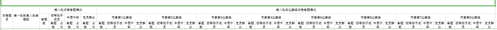

工作中使用 easypoi，当遇见复杂模板的时候我们都可以选择用简单方便的模板导出的方式
public void two() throws Exception { | |
TemplateExportParams params = new TemplateExportParams( | |
"doc/exportTemp.xls", 1); | |
Map<String, Object> map = new HashMap<String, Object>(); | |
map.put("month", 10); | |
Map<String, Object> temp; | |
for (int i = 1; i < 8; i++) { | |
temp = new HashMap<String, Object>(); | |
temp.put("per", i * 10); | |
temp.put("mon", i * 1000); | |
temp.put("summon", i * 10000); | |
map.put("i" + i, temp); | |
} | |
Workbook book = ExcelExportUtil.exportExcel(params, map); | |
File savefile = new File("D:/home/excel/"); | |
if (!savefile.exists()) { | |
savefile.mkdirs(); | |
} | |
FileOutputStream fos = new FileOutputStream("D:/home/excel/exportTemp2.xls"); | |
book.write(fos); | |
fos.close(); | |
} |
但是当我们需要导出复杂的表，比如行肯定是需要遍历的，但是列也是不唯一呢，我们就需要手动插入行。
public void myTest(){ | |
try { | |
List<ExcelExportEntity> colList = new ArrayList<ExcelExportEntity>(); | |
ExcelExportEntity colEntity = new ExcelExportEntity("问卷题目", "question"); | |
colEntity.setNeedMerge(true); | |
colList.add(colEntity); | |
colEntity = new ExcelExportEntity("第一轮到第八轮答题数", "allAnswer"); | |
colEntity.setNeedMerge(true); | |
colList.add(colEntity); | |
ExcelExportEntity turnGroup = new ExcelExportEntity("第八轮问卷答题情况","answerSituation"); | |
List<ExcelExportEntity> turnColList = new ArrayList<ExcelExportEntity>(); | |
turnColList.add(new ExcelExportEntity("答题数","answer")); | |
ExcelExportEntity leader = new ExcelExportEntity("领导班子成员", "leader"); | |
List<ExcelExportEntity> resLeaderColList = new ArrayList<ExcelExportEntity>(); | |
resLeaderColList.add(new ExcelExportEntity("答题数", "leaderAnswer")); | |
resLeaderColList.add(new ExcelExportEntity("占比", "leaderPercent")); | |
leader.setList(resLeaderColList); | |
ExcelExportEntity middle = new ExcelExportEntity("中层干部", "middle"); | |
List<ExcelExportEntity> resMiddleColList = new ArrayList<ExcelExportEntity>(); | |
resMiddleColList.add(new ExcelExportEntity("答题数", "middleAnswer")); | |
resMiddleColList.add(new ExcelExportEntity("占比", "middlePercent")); | |
middle.setList(resMiddleColList); | |
ExcelExportEntity mass = new ExcelExportEntity("党员群众", "mass"); | |
List<ExcelExportEntity> resMassColList = new ArrayList<ExcelExportEntity>(); | |
resMassColList.add(new ExcelExportEntity("答题数", "massAnswer")); | |
resMassColList.add(new ExcelExportEntity("占比", "massPercent")); | |
mass.setList(resMassColList); | |
turnColList.add(leader); | |
turnColList.add(middle); | |
turnColList.add(mass); | |
turnGroup.setList(turnColList); | |
ExcelExportEntity teamGroup = new ExcelExportEntity("第八轮各巡察组问卷答题情况", "teamAnswerSituation"); | |
List<ExcelExportEntity> teamNameColList = new ArrayList<ExcelExportEntity>(); | |
for (int i = 1; i <= 8; i++) { | |
ExcelExportEntity teamName = new ExcelExportEntity("市委第"+i+"巡察组", "teamName" + i); | |
teamNameColList.add(teamName); | |
List<ExcelExportEntity> teamAnswerColList = new ArrayList<ExcelExportEntity>(); | |
teamAnswerColList.add(new ExcelExportEntity("答题数", "answer" + i)); | |
teamAnswerColList.add(new ExcelExportEntity("领导班子成员", "leaderAnswer" + i)); | |
teamAnswerColList.add(new ExcelExportEntity("中层干部", "middleAnswer" + i)); | |
teamAnswerColList.add(new ExcelExportEntity("党员群众", "massPercent" + i)); | |
teamName.setList(teamAnswerColList); | |
} | |
teamGroup.setList(teamNameColList); | |
colList.add(turnGroup); | |
colList.add(teamGroup); | |
List<Map<String, Object>> list = new ArrayList<Map<String, Object>>(); | |
ExportParams params = new ExportParams("", "分析表二"); | |
Workbook workbook = ExcelExportUtil.exportExcel(params, colList, | |
list); | |
FileOutputStream fos = new FileOutputStream("D:/download/file/分析表二1.xlsx"); | |
workbook.write(fos); | |
fos.close(); | |
} catch (FileNotFoundException e) { | |
e.printStackTrace(); | |
} catch (IOException e) { | |
e.printStackTrace(); | |
} | |
} |
结果如图

注意版本区别：
// 这个版本列会自动合并 | |
<dependency> | |
<groupId>cn.afterturn</groupId> | |
<artifactId>easypoi-spring-boot-starter</artifactId> | |
<version>4.3.0</version> | |
</dependency> | |
// 如4.2.0版本列不会自动合并 | |
<dependency> | |
<groupId>cn.afterturn</groupId> | |
<artifactId>easypoi-spring-boot-starter</artifactId> | |
<version>4.2.0</version> | |
</dependency> |
什么场景该用哪个方法？
导出
1. 正规 excel 导出 (格式简单，数据量可以，5W 以内吧)
注解方式: ExcelExportUtil.exportExcel (ExportParams entity, Class<?> pojoClass,Collection<?> dataSet)
2. 不定多少列，但是格式依然简单数据库不大
自定义方式: ExcelExportUtil.exportExcel (ExportParams entity, List<ExcelExportEntity> entityList,Collection<?> dataSet)
3. 数据量大超过 5W, 还在 100W 以内
注解方式 ExcelExportUtil.exportBigExcel (ExportParams entity, Class<?> pojoClass,IExcelExportServer server, Object queryParams)
自定义方式: ExcelExportUtil.exportBigExcel (ExportParams entity, List<ExcelExportEntity> excelParams,IExcelExportServer server, Object queryParams)
4. 样式复杂，数据量尽量别大
模板导出 ExcelExportUtil.exportExcel (TemplateExportParams params, Map<String, Object> map)
5. 一次导出多个风格不一致的 sheet
模板导出 ExcelExportUtil.exportExcel (Map<Integer, Map<String, Object>> map,TemplateExportParams params)
6. 一个模板但是要导出非常多份
模板导出 ExcelExportUtil.exportExcelClone (Map<Integer, List<Map<String, Object>>> map,TemplateExportParams params)
7. 模板无法满足你的自定义，试试 html
自己构造 html, 然后我给你转成 excel ExcelXorHtmlUtil.htmlToExcel (String html, ExcelType type)
8. 数据量过百万级了。放弃 excel 吧，csv 导出
注解方式: CsvExportUtil.exportCsv (CsvExportParams params, Class<?> pojoClass, OutputStream outputStream)
自定义方式: CsvExportUtil.exportCsv (CsvExportParams params, List<ExcelExportEntity> entityList, OutputStream outputStream)
9.word 导出
模板导出: WordExportUtil.exportWord07 (String url, Map<String, Object> map)
10.PDF 导出
模板导出: TODO导入
如果想提高性能 ImportParams 的 concurrentTask 可以帮助并发导入，仅单行，最小 1000
excel 有单个的那种特殊读取，readSingleCell 参数可以支持- 不需要检验，数据量不大 (5W 以内)
注解或者 MAP: ExcelImportUtil.importExcel (File file, Class<?> pojoClass, ImportParams params) - 需要导入，数据量不大
注解或者 MAP: ExcelImportUtil.importExcelMore (InputStream inputstream, Class<?> pojoClass, ImportParams params) - 数据量大了，或者你有特别多的导入操作，内存比较少，仅支持单行
SAX 方式 ExcelImportUtil.importExcelBySax (InputStream inputstream, Class<?> pojoClass, ImportParams params, IReadHandler handler) - 数据量超过 EXCEL 限制，CSV 读取
小数据量: CsvImportUtil.importCsv (InputStream inputstream, Class<?> pojoClass,CsvImportParams params)
大数据量: CsvImportUtil.importCsv (InputStream inputstream, Class<?> pojoClass,CsvImportParams params, IReadHandler readHandler)
:::
- 不需要检验，数据量不大 (5W 以内)